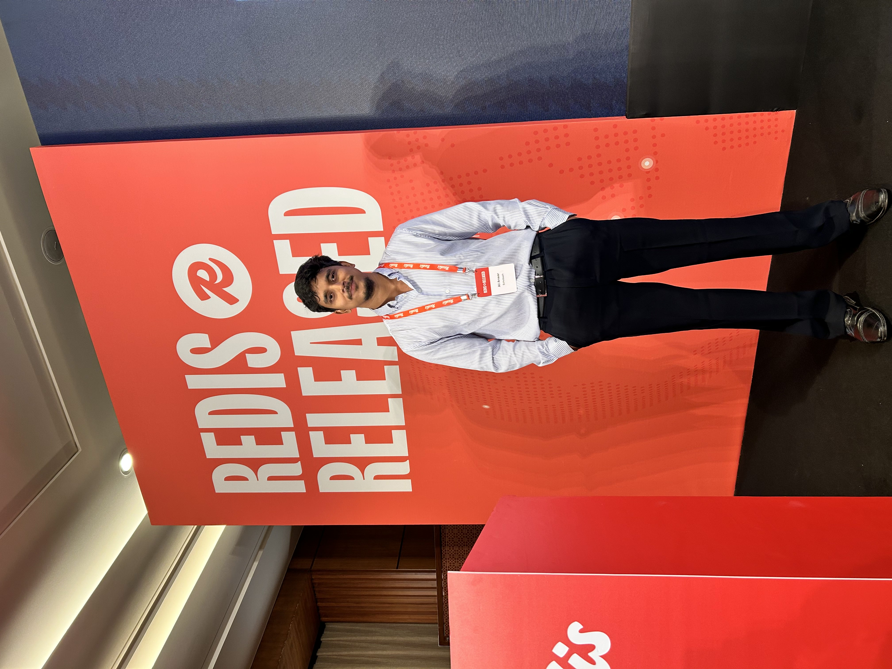
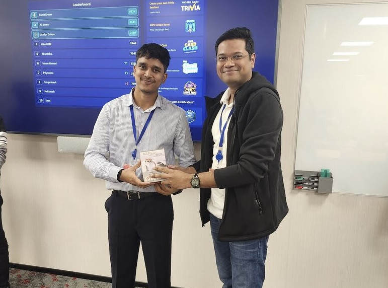

Conference Experiences

Attended
Redis® Released 2025
Leela Ambience, New Delhi
January 2025
Exploring modern AI systems and the latest developments in Redis technology. Connected with industry leaders and learned about cutting-edge caching strategies.
Read Experience

Attended
Amazon Kiro Workshop 2026
AWS Office, Downtown Gurugram
February 2025
Hands-on workshop on agentic AI systems, spec-driven development, and AWS AI stack. Organized by AWS User Group Delhi NCR.
Read Experience
Connect & Collaborate
Interested in discussing AI systems, modern architecture, or attending upcoming tech conferences? Let's connect!